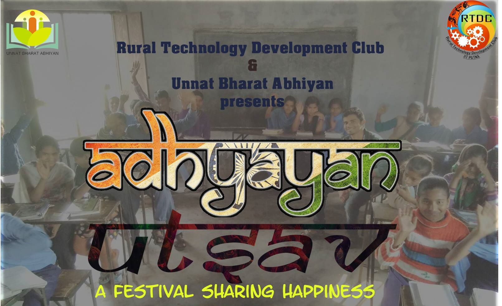

Love what you do, and you'll do it well

Adhyayan
It is a campaign through which we will be making GOOD quality educational videos in many regional languages, we will first focus Hindi medium videos.
Find us on Facebook

Celesta Events
Events in Celesta
Explora,Science Exhibition, Parliamentary Debate, The Innovation Challenge
Find out more

Adhyayan Utsav
A week long student festival is conducted by students of Indian Institute of Technology Patna under Rural Technology Development Club in three government funded schools in the town of Bihta -¬ Middle School, Dilawarpur ; Middle School, Amhara and High School, Amhara. This festival, entirely funded by us, is conducted every year in the month of March.